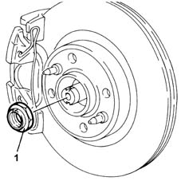
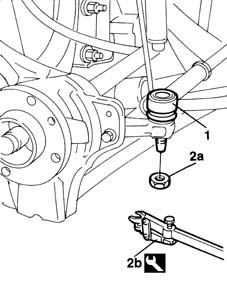
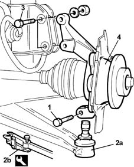
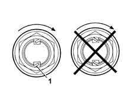

4450C10 front pillar (one), l/h or r/h complete with wheel hub - r+r with wheel removed - check wheel geometry separately
- Path
- Procedures > 44 SUSPENSION AND WHEELS > 4450 WHEELS AND HUBS > 4450C front wheel hubs > 4450C10 front pillar (one), l/h or r/h complete with wheel hub - r+r with wheel removed - check wheel geometry separately
- Kind
- repair procedure (removal / refitting; the operation number is the code)
- Applies to
- all engines; all production periods
- Interactive page
- https://sloeber94.github.io/elrnDB-fMltpl/en/#/2891745
Applies to: all engines; all production periods
 Removing
Removing
 Refitting
RefittingOperation to be carried out with the vehicle on a lift.
4450C70 hub cap of one front wheel, l/h or r/h - r+r .
Remove the staking from the wheel side constant velocity joint nut.
1. Undo the wheel side constant velocity joint nut.

Applies to: all engines; all production periods
3310A57 front brake calliper bracket - r r .
3310A50 front brake discs r r .
1. Undo the nut fixing the hub to the adjustable rod ball joint.
2. Separate the adjustable rod ball joint (2a) from the hub using the tool (2b).
 | Name | Country |
|---|---|---|
2b | Head extractor | 1.847.035.000 |

Applies to: all engines; all production periods
1. Undo the bolt fixing the hub to the lower track control arm ball joint.
2. Separate the track control arm ball joint (2a) from the hub using the tool (2b).
3. Undo the bolts fixing the hub to the shock absorber.
4. Remove the front hub steering knuckle.
| Name | Country |
|---|---|---|
2b | Head extractor | 1.847.035.000 |

Applies to: all engines; all production periods
Refitting
RemovingFit the hub steering knuckle in the wheel side constant velocity joint.
Join the hub steering knuckle to the shock absorber using the bolts and tighten the nuts to torque.
 | Fastening | Component | Ø | Value (daNm) |
|---|---|---|---|---|
- | Nut | FRONT HUB STEERING KNUCKLE. | M10 x 1.25 | 7 |
Insert the track control arm ball joint in the hub steering knuckle and tighten the fixing nut to torque.
| Fastening | Component | Ø | Value (daNm) |
|---|---|---|---|---|
- | Nut | FRONT SUSPENSION LOWER LEVER BALL JOINT | M10 x 1.25 | 7 |
Join the adjustable rod ball joint to the hub steering knuckle and tighten the fixing nut to torque.
| Fastening | Component | Ø | Value (daNm) |
|---|---|---|---|---|
- | Nut | ADJUSTABLE LINK BALL JOINTS | M10 x 1.25 | 4 |
3310A50 front brake discs r r .
3310A57 front brake calliper bracket - r r .
Lower the vehicle.
Tighten the wheel side constant velocity joint nut to torque.
| Fastening | Component | Ø | Value (daNm) |
|---|---|---|---|---|
- | Nut | WHEEL END CONSTANT VELOCITY JOINT | M24 x 1.5 | 7 + 62° |
1. Stake the wheel side constant velocity joint nut.

Applies to: all engines; all production periods
Topics linked from this page (3)
- 3310A50 front brake discs r r
- 3310A57 front brake calliper bracket - r r
- 4450C70 hub cap of one front wheel, l/h or r/h - r+r